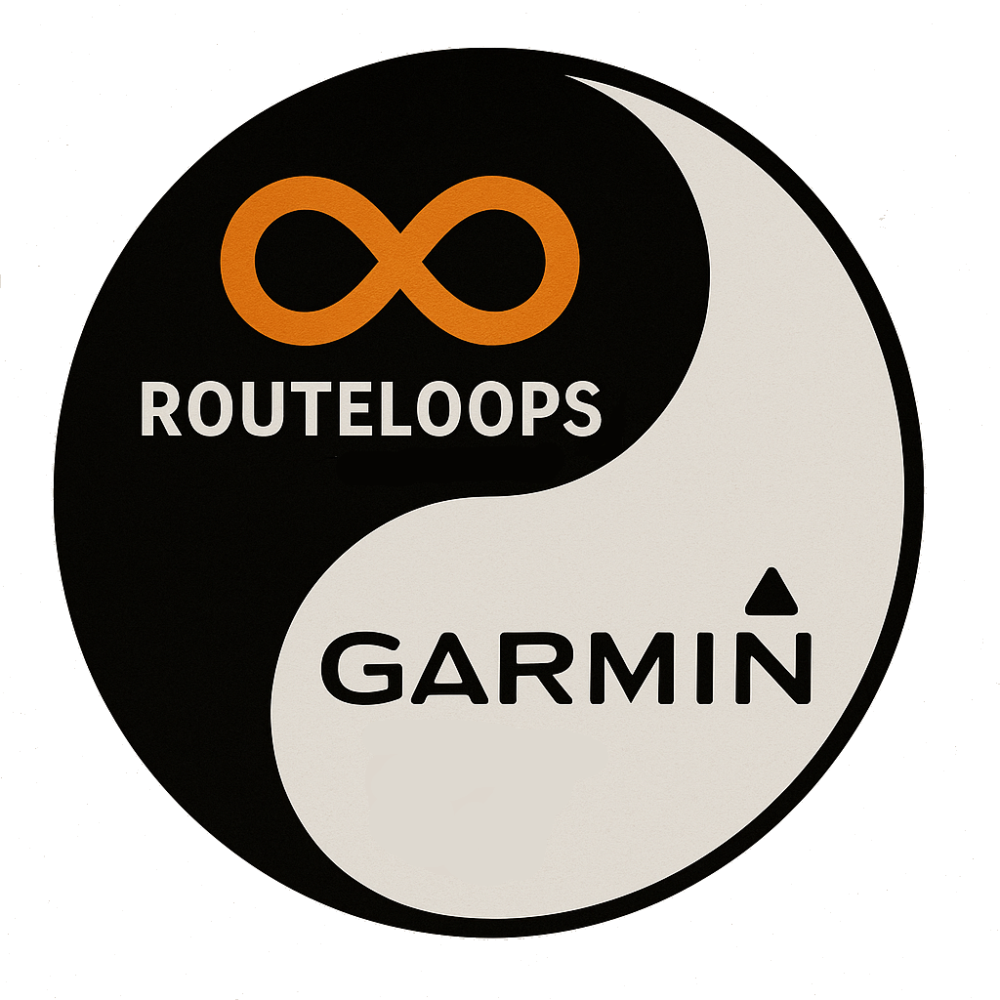

Location:
Dist:
Imperial (Miles)
Metric (Kilometers)
Distance:
Mode:
Driving
Bicycling
Pedestrian
Rotation:
Clockwise
Counter-clockwise
Direction:
Random
North
Northeast
East
Southeast
South
Southwest
West
Northwest
Path Method:
Random
Circular
Rectangular
Figure 8
Avoid Highways:
Yes
No
Avoid Ferries:
Yes
No
Status:
Messages:
# Calcs:
Start/End:
Route Name:
Output:
Select output format
Directions
Sparse GPX
Dense GPX
TCX
Upload to Garmin Connect

Show Direction Markers
Lock Route
Privacy